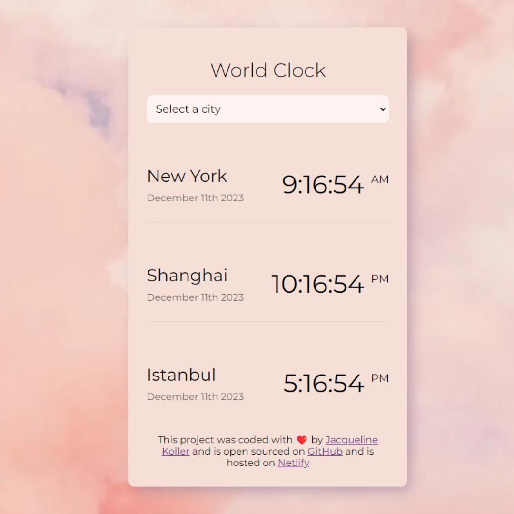

World Clock
Built with HTML, CSS, APIs and JavaScript
This aesthetic World Clock elegantly displays multiple time zones. The minimalist design ensures effortless customization, turning the routine task of tracking time into a visually pleasing and streamlined experience.
An AI-driven poem generator. This innovative tool transforms prompts into enchanting verses, ranging from heartfelt sonnets to whimsical haikus. A creative companion that weaves language with artistry, it adds a touch of magic to the beauty of words.
Poem Generator

Built with HTML, CSS, APIs and JavaScript
Weather App

Built with HTML, CSS, APIs and JavaScript
Introducing my whimsical weather app, blending functionality with charm. Cute icons bring current conditions to life, creating a visually delightful experience. The clean interface provides essential weather info at a glance, making daily checks enjoyable.
With just the essentials, discover the artistry and refreshing nuances of this delightful beverage, whether you're a seasoned enthusiast or a curious beginner.
Tea Project

Built with HTML and CSS